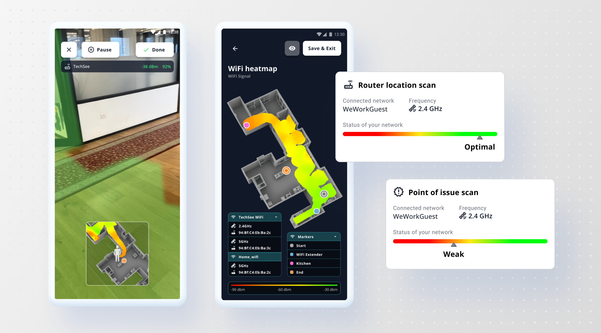
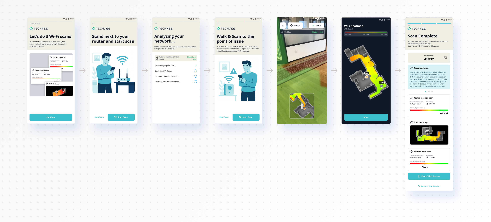

Connectivity Guru
A customer scans their own home to find their WiFi dead zones. If they still need a person, the agent who picks up the call sees the same map, plus every scan that customer’s run before.

UI design for the native app, iOS and Android, and the agent facing views inside TechSee Live
RnD owned the signal processing and the AI diagnostics. I owned the interface
The customer's self guided scan, the technician's app, the generated technician report, and the agent's session and history views
Launched publicly as Connectivity Guru in Feb 2025. Two more releases followed, one for field technicians and one for contact center agents, before I left in March 2026
TechSee, roughly 2023 to 2026. Designed the native app first, then carried it through public launch and the two releases after
Connectivity Guru started as a native scanning app and became TechSee’s first purpose built agentic AI product for home connectivity, launched publicly in February 2025 and built on Sophie AI underneath. It’s actually two separate apps, one for technicians and one for customers. I worked on it in the early stages, before and around that launch, mostly the scan UI, both technician and customer apps, agent’s history and comparison view. It’s sold into telecom, home security and smart home providers. More than half of customers say they’d switch providers over an unresolved connectivity problem, which is most of why this shipped as fast as it did.
Source: TechSeeThe flow starts at the router,
not at the problem
A regular scan reads signal strength at the source. If that’s healthy, an AR scan maps the walk, weak to strong, and the heatmap shows possible causes for each weak spot, a refrigerator, a metal wall, whatever might be blocking the signal. The customer ends up with that heat map over the scanned area, plus the router’s signal strength.
A stepper tracked progress through the flow, so it never felt open-ended.
If the router reading is already weak, the flow stops there. A bad reading at the router was already a likely cause. The customer gets a basic AI recommendation built from that scan, not a handoff to a person.

What the agent sees
The same scan lands inside TechSee Live as a session card: signal strength, connected devices, and a history of that customer’s past scans sitting right next to it. An agent on a repeat call can compare this scan against the last one and see what actually changed, not just what’s wrong today. One click sends it to Sophie.
It’s the same job TechSee’s contact center release later described: a live heat map an agent can read, instead of a transcript.

The technician’s app
Connectivity Guru isn’t one app wearing two hats, it’s two separate apps. Technicians got theirs first. It’s a more technical view than the customer ever sees, with detail a homeowner wouldn’t know what to do with.
Technicians can drop markers directly onto WiFi extenders and other problem spots they spot in the room, and move independently through each mesh unit’s view within the same network, to check whether one of them isn’t holding up its end.
The heatmap was a real constraint here. It’s a PNG, not a vector, so markers couldn’t carry their own labels on the image itself, the names live in a separate legend instead. Given more time, I’d have shown each marker with its name right on it, not pulled out into a legend a technician has to cross-reference.


The technician’s report
Every scan also produces a report, floor by floor: heat maps per floor, a channel congestion read across 2.4, 5 and 6 GHz, and every device the scan detected on the network. It’s close to what TechSee later described as a connectivity “birth certificate,” proof of coverage a technician can leave behind, not just a fix they promise held.

What happened
Connectivity Guru launched publicly in February 2025, TechSee’s first purpose built agentic AI product, built on Sophie AI. Two more releases followed: Model 2.1 in July, for field technicians, and Model 3.1 in October, for contact center agents. Both were live before I left in March 2026.